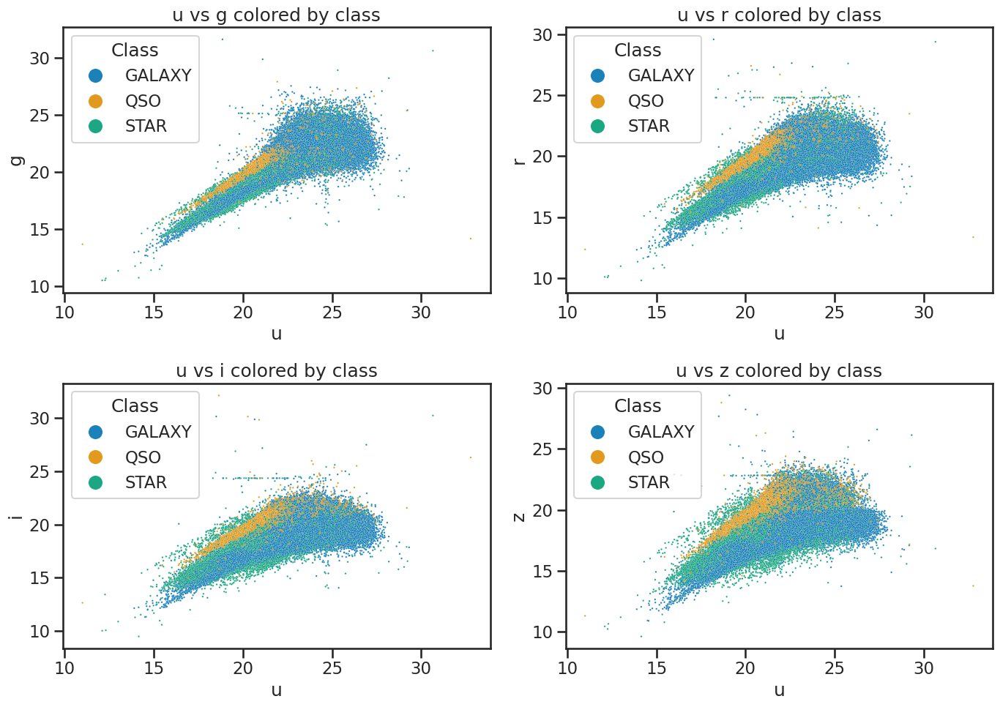

Using KNN to classify objects with sklearn and pandas - solution#
1. Stellar Classification Dataset - SDSS17#
# necessary imports for this notebook
%matplotlib inline
import pandas as pd
import numpy as np
import matplotlib.pyplot as plt
import seaborn as sns
sns.set_style('ticks') # setting style
sns.set_context('talk') # setting context
sns.set_palette('colorblind') # setting palette
Read in the data and filter it#
stellar = pd.read_csv('./data/star_classification.csv')
stellar.head()
# remove all the columns that are not needed
df_stellar = stellar[['obj_ID', 'class', 'u', 'g', 'r', 'i', 'z','redshift']]
# drop any row with negative photometric values
filter = (df_stellar['u'] >= 0) & (df_stellar['g'] >= 0) & (df_stellar['r'] >= 0) & (df_stellar['i'] >= 0) & (df_stellar['z'] >= 0)
df_stellar = df_stellar[filter]
# describe the data again
df_stellar.describe()
| obj_ID | u | g | r | i | z | redshift | |
|---|---|---|---|---|---|---|---|
| count | 9.999900e+04 | 99999.000000 | 99999.000000 | 99999.000000 | 99999.000000 | 99999.000000 | 99999.000000 |
| mean | 1.237665e+18 | 22.080679 | 20.631583 | 19.645777 | 19.084865 | 18.768988 | 0.576667 |
| std | 8.438450e+12 | 2.251068 | 2.037384 | 1.854763 | 1.757900 | 1.765982 | 0.730709 |
| min | 1.237646e+18 | 10.996230 | 10.498200 | 9.822070 | 9.469903 | 9.612333 | -0.009971 |
| 25% | 1.237659e+18 | 20.352410 | 18.965240 | 18.135795 | 17.732280 | 17.460830 | 0.054522 |
| 50% | 1.237663e+18 | 22.179140 | 21.099930 | 20.125310 | 19.405150 | 19.004600 | 0.424176 |
| 75% | 1.237668e+18 | 23.687480 | 22.123775 | 21.044790 | 20.396510 | 19.921120 | 0.704172 |
| max | 1.237681e+18 | 32.781390 | 31.602240 | 29.571860 | 32.141470 | 29.383740 | 7.011245 |
Plot the data to review it#
fig, axes = plt.subplots(2, 2, figsize=(14, 10))
# u vs g
sns.scatterplot(x='u', y='g', hue='class', data=df_stellar, ax=axes[0, 0], alpha=0.9, s=3)
axes[0, 0].set_xlabel('u')
axes[0, 0].set_ylabel('g')
axes[0, 0].set_title('u vs g colored by class')
axes[0, 0].legend(title='Class', loc='upper left', markerscale=8)
# u vs r
sns.scatterplot(x='u', y='r', hue='class', data=df_stellar, ax=axes[0, 1], alpha=0.9, s=3)
axes[0, 1].set_xlabel('u')
axes[0, 1].set_ylabel('r')
axes[0, 1].set_title('u vs r colored by class')
axes[0, 1].legend(title='Class', loc='upper left', markerscale=8)
# u vs i
sns.scatterplot(x='u', y='i', hue='class', data=df_stellar, ax=axes[1, 0], alpha=0.9, s=3)
axes[1, 0].set_xlabel('u')
axes[1, 0].set_ylabel('i')
axes[1, 0].set_title('u vs i colored by class')
axes[1, 0].legend(title='Class', loc='upper left', markerscale=8)
# u vs z
sns.scatterplot(x='u', y='z', hue='class', data=df_stellar, ax=axes[1, 1], alpha=0.9, s=3)
axes[1, 1].set_xlabel('u')
axes[1, 1].set_ylabel('z')
axes[1, 1].set_title('u vs z colored by class')
axes[1, 1].legend(title='Class', loc='upper left', markerscale=8)
plt.tight_layout()
plt.show()

# create subplots
fig, axes = plt.subplots(2, 3, figsize=(14, 10))
# use seaborn to plot histograms of u, g, r, i, z
# include the class as hue
# and use kde for density estimation
sns.histplot(data=df_stellar, x='u', hue='class', multiple='stack', ax=axes[0, 0], bins=30, kde=True)
sns.histplot(data=df_stellar, x='g', hue='class', multiple='stack', ax=axes[0, 1], bins=30, kde=True)
sns.histplot(data=df_stellar, x='r', hue='class', multiple='stack', ax=axes[0, 2], bins=30, kde=True)
sns.histplot(data=df_stellar, x='i', hue='class', multiple='stack', ax=axes[1, 0], bins=30, kde=True)
sns.histplot(data=df_stellar, x='z', hue='class', multiple='stack', ax=axes[1, 1], bins=30, kde=True)
axes[1, 2].axis('off') # Hide the empty subplot
# set titles for each subplot
axes[0, 0].set_title('Histogram of u')
axes[0, 1].set_title('Histogram of g')
axes[0, 2].set_title('Histogram of r')
axes[1, 0].set_title('Histogram of i')
axes[1, 1].set_title('Histogram of z')
plt.tight_layout()
plt.show()

Bias in your data?#
fig, axs = plt.subplots(1, 2, figsize=(16, 6))
# All classes
class_counts = df_stellar['class'].value_counts()
percentages = df_stellar['class'].value_counts(normalize=True) * 100
sns.barplot(x=class_counts.index, y=class_counts.values, hue=class_counts.index, palette='colorblind', legend=False, ax=axs[0])
axs[0].set_xticklabels([f"{cls}\n({percentages[cls]:.1f}%)" for cls in class_counts.index])
axs[0].set_title('Counts of Each Class')
axs[0].set_xlabel('Class')
axs[0].set_ylabel('Count')
axs[0].tick_params(axis='x', rotation=45)
# Excluding GALAXY
df_no_galaxies = df_stellar[df_stellar['class'] != 'GALAXY']
percentages_no_galaxy = df_no_galaxies['class'].value_counts(normalize=True) * 100
# Use colorblind palette but skip the reverse order to make sure labels are same as colors in both plots
palette_no_galaxy = sns.color_palette('colorblind')[2:0:-1]
ax2 = sns.countplot(x='class', data=df_no_galaxies, hue='class', palette=palette_no_galaxy, ax=axs[1], legend=False)
tick_labels = [tick.get_text() for tick in ax2.get_xticklabels()]
ax2.set_xticklabels([f"{label}\n({percentages_no_galaxy[label]:.1f}%)" for label in tick_labels])
ax2.set_title('Counts of Each Class (Excluding GALAXY)')
ax2.set_xlabel('Class')
ax2.set_ylabel('Count')
ax2.tick_params(axis='x', rotation=45)
plt.tight_layout()
plt.show()
/tmp/ipykernel_876/3975914237.py:7: UserWarning: set_ticklabels() should only be used with a fixed number of ticks, i.e. after set_ticks() or using a FixedLocator.
axs[0].set_xticklabels([f"{cls}\n({percentages[cls]:.1f}%)" for cls in class_counts.index])
/tmp/ipykernel_876/3975914237.py:22: UserWarning: set_ticklabels() should only be used with a fixed number of ticks, i.e. after set_ticks() or using a FixedLocator.
ax2.set_xticklabels([f"{label}\n({percentages_no_galaxy[label]:.1f}%)" for label in tick_labels])
2. The 2 Class Problem - Modeling Without Redshift#
## Import necessary libraries for the classification model
from sklearn.neighbors import KNeighborsClassifier
from sklearn.model_selection import train_test_split
from sklearn.preprocessing import StandardScaler
# Define features and target variable
X = df_no_galaxies[['u', 'g', 'r', 'i', 'z']]
y = df_no_galaxies['class']
Train-Test Split#
# Split the dataset into training and testing sets
X_train, X_test, y_train, y_test = train_test_split(X, y, test_size=0.2, random_state=42, stratify=y)
Scaling the Data#
# Standardize the features
scaler = StandardScaler()
X_train_scaled = scaler.fit_transform(X_train)
X_test_scaled = scaler.transform(X_test)
K-Nearest Neighbors Classifier#
# Create and train the KNN classifier
knn_classifier = KNeighborsClassifier(n_neighbors=3)
knn_classifier.fit(X_train_scaled, y_train)
# Make predictions on the test set
y_pred = knn_classifier.predict(X_test_scaled)
The Classification Report#
# Evaluate the model
from sklearn.metrics import classification_report, confusion_matrix
# Print the classification report
print(classification_report(y_test, y_pred))
precision recall f1-score support
QSO 0.86 0.86 0.86 3792
STAR 0.88 0.88 0.88 4319
accuracy 0.87 8111
macro avg 0.87 0.87 0.87 8111
weighted avg 0.87 0.87 0.87 8111
The Confusion Matrix#
conf_matrix = confusion_matrix(y_test, y_pred)
def plot_confusion_matrix(conf_matrix, classes, N=0, filename=None):
plt.figure(figsize=(8, 6))
conf_matrix_prop = conf_matrix / conf_matrix.sum()
sns.heatmap(conf_matrix_prop, annot=True, fmt='.2%', cmap='turbo',
xticklabels=classes, yticklabels=classes)
plt.title(f'Confusion Matrix (N={N})')
plt.xlabel('Predicted Class')
plt.ylabel('True Class')
if filename:
plt.savefig(filename, dpi=300, bbox_inches='tight')
plt.show()
plot_confusion_matrix(conf_matrix, knn_classifier.classes_, 3, './figures/confusion_matrix_knn_n3.png')
Plotting Codes#
Show code cell content
def get_classification_dfs(X_test, y_test, y_pred):
"""
Create DataFrames for correctly and misclassified points.
Parameters
----------
X_test : pd.DataFrame
Test set features.
y_test : pd.Series or np.ndarray
True class labels for the test set.
y_pred : np.ndarray
Predicted class labels for the test set.
Returns
-------
df : pd.DataFrame
DataFrame with test features, true class, and predicted class.
misclassified : pd.DataFrame
DataFrame with only misclassified samples.
"""
df = X_test.copy()
df['true_class'] = y_test
df['predicted_class'] = y_pred
misclassified = df[df['true_class'] != df['predicted_class']]
return df, misclassified
def get_axis_limits(df, X_test):
"""
Get axis limits for u and g columns for plotting.
Parameters
----------
df : pd.DataFrame
Full DataFrame (for min/max reference).
X_test : pd.DataFrame
Test set features.
Returns
-------
u_min, u_max, g_min, g_max : float
Minimum and maximum values for u and g axes.
"""
u_min = min(df['u'].min(), X_test['u'].min())
u_max = max(df['u'].max(), X_test['u'].max())
g_min = min(df['g'].min(), X_test['g'].min())
g_max = max(df['g'].max(), X_test['g'].max())
return u_min, u_max, g_min, g_max
def plot_actual_results(ax, df, palette, class_order, u_min, u_max, g_min, g_max):
"""
Plot actual class distribution in u vs g space.
Parameters
----------
ax : matplotlib.axes.Axes
The axes to plot on.
df : pd.DataFrame
DataFrame containing the data.
palette : dict
Color palette for classes.
class_order : list
Order of classes for legend.
u_min, u_max, g_min, g_max : float
Axis limits.
"""
sns.scatterplot(
x='u', y='g', hue='class', data=df,
alpha=0.9, s=3, palette=palette, ax=ax, hue_order=class_order
)
ax.set_title('Actual Results: u vs g')
ax.set_xlabel('u')
ax.set_ylabel('g')
ax.legend(title='Class', loc='upper left', markerscale=8)
ax.set_xlim(u_min, u_max)
ax.set_ylim(g_min, g_max)
def plot_predicted_results(ax, X_test, y_pred, palette, class_order, u_min, u_max, g_min, g_max):
"""
Plot predicted class distribution in u vs g space.
Parameters
----------
ax : matplotlib.axes.Axes
The axes to plot on.
X_test : pd.DataFrame
Test set features.
y_pred : np.ndarray or pd.Series
Predicted class labels.
palette : dict
Color palette for classes.
class_order : list
Order of classes for legend.
u_min, u_max, g_min, g_max : float
Axis limits.
"""
sns.scatterplot(
x=X_test['u'], y=X_test['g'], hue=y_pred,
alpha=0.9, s=3, palette=palette, ax=ax, hue_order=class_order
)
ax.set_title('KNN Predicted Class: u vs g')
ax.set_xlabel('u')
ax.set_ylabel('g')
ax.legend(title='Predicted Class', loc='upper left', markerscale=8)
ax.set_xlim(u_min, u_max)
ax.set_ylim(g_min, g_max)
def plot_misclassified(ax, correctly_classified_df, misclassified_df, palette, class_order, u_min, u_max, g_min, g_max):
"""
Plot correctly and misclassified points in u vs g space.
Parameters
----------
ax : matplotlib.axes.Axes
The axes to plot on.
correctly_classified_df : pd.DataFrame
DataFrame of all test points with true and predicted class.
misclassified_df : pd.DataFrame
DataFrame of misclassified points.
palette : dict
Color palette for classes.
class_order : list
Order of classes for legend.
u_min, u_max, g_min, g_max : float
Axis limits.
"""
correct_counts = correctly_classified_df[
correctly_classified_df['true_class'] == correctly_classified_df['predicted_class']
]['predicted_class'].value_counts()
for cls in class_order:
cls_mask = (correctly_classified_df['predicted_class'] == cls) & (correctly_classified_df['true_class'] == cls)
sns.scatterplot(
x=correctly_classified_df.loc[cls_mask, 'u'],
y=correctly_classified_df.loc[cls_mask, 'g'],
color=palette[cls],
label=f"{cls} (N={correct_counts.get(cls, 0)})",
ax=ax, alpha=0.5, s=3
)
sns.scatterplot(
x=misclassified_df['u'], y=misclassified_df['g'],
color='red', label=f"Misclassified (N={len(misclassified_df)})", ax=ax, alpha=0.9, s=3
)
ax.set_title('Misclassified Points in Red')
ax.set_xlabel('u')
ax.set_ylabel('g')
ax.legend(title='Class', loc='upper left', markerscale=8)
ax.set_xlim(u_min, u_max)
ax.set_ylim(g_min, g_max)
def plot_classification_results(
df_no_galaxies, X_test, y_pred, correctly_classified_df, misclassified_df,
u_min, u_max, g_min, g_max, filename=None
):
"""
Plot actual, predicted, and misclassified results side by side.
Parameters
----------
df_no_galaxies : pd.DataFrame
DataFrame of all data without galaxies.
X_test : pd.DataFrame
Test set features.
y_pred : np.ndarray or pd.Series
Predicted class labels.
correctly_classified_df : pd.DataFrame
DataFrame of all test points with true and predicted class.
misclassified_df : pd.DataFrame
DataFrame of misclassified points.
u_min, u_max, g_min, g_max : float
Axis limits.
filename : str or None, optional
If provided, save the figure to this file.
"""
fig, axs = plt.subplots(3, 1, figsize=(10, 30))
class_order = ['STAR', 'QSO']
palette = dict(zip(class_order, sns.color_palette('colorblind', n_colors=2)))
plot_actual_results(axs[0], df_no_galaxies, palette, class_order, u_min, u_max, g_min, g_max)
plot_predicted_results(axs[1], X_test, y_pred, palette, class_order, u_min, u_max, g_min, g_max)
plot_misclassified(axs[2], correctly_classified_df, misclassified_df, palette, class_order, u_min, u_max, g_min, g_max)
plt.tight_layout()
if filename:
plt.savefig(filename, dpi=300, bbox_inches='tight')
plt.show()
# Prepare data for plotting
correctly_classified_df, misclassified_df = get_classification_dfs(X_test, y_test, y_pred)
u_min, u_max, g_min, g_max = get_axis_limits(df_no_galaxies, X_test)
# Call the modular plotting function
plot_classification_results(df_no_galaxies, X_test, y_pred, correctly_classified_df, misclassified_df, u_min, u_max, g_min, g_max, filename='./figures/classification_results_knn_n3.png')
Performance Across Different Values of K#
def knn_performance_vs_neighbors(X_train_scaled, y_train, X_test_scaled, y_test, k_range=range(1, 21)):
from sklearn.metrics import accuracy_score, f1_score
accuracies = []
f1_scores = []
for k in k_range:
knn_classifier = KNeighborsClassifier(n_neighbors=k)
knn_classifier.fit(X_train_scaled, y_train)
y_pred = knn_classifier.predict(X_test_scaled)
accuracies.append(accuracy_score(y_test, y_pred))
f1_scores.append(f1_score(y_test, y_pred, average='weighted'))
return list(k_range), accuracies, f1_scores
def plot_knn_performance(neighbors, accuracies, f1_scores, filename=None):
plt.figure(figsize=(12, 6))
plt.plot(neighbors, accuracies, marker='o', label='Accuracy', color='blue')
plt.plot(neighbors, f1_scores, marker='o', label='F1 Score', color='orange')
plt.title('KNN Classifier Performance vs. Number of Neighbors')
plt.xlabel('Number of Neighbors (k)')
plt.ylabel('Score')
plt.xticks(neighbors)
plt.legend()
plt.grid()
plt.tight_layout()
if filename:
plt.savefig(filename, dpi=300, bbox_inches='tight')
plt.show()
neighbors, accuracies, f1_scores = knn_performance_vs_neighbors(X_train_scaled, y_train, X_test_scaled, y_test)
plot_knn_performance(neighbors, accuracies, f1_scores, './figures/knn_performance_vs_neighbors.png')
Does K=9 Perform Much Better?#
# Create and train the KNN classifier with k=9
knn_classifier = KNeighborsClassifier(n_neighbors=9)
knn_classifier.fit(X_train_scaled, y_train)
y_pred = knn_classifier.predict(X_test_scaled)
# Print the classification report
print(classification_report(y_test, y_pred))
# Plot the confusion matrix using the modular function
conf_matrix = confusion_matrix(y_test, y_pred)
plot_confusion_matrix(conf_matrix, knn_classifier.classes_, 9, './figures/confusion_matrix_knn_n9.png')
precision recall f1-score support
QSO 0.87 0.86 0.87 3792
STAR 0.88 0.89 0.88 4319
accuracy 0.88 8111
macro avg 0.87 0.87 0.87 8111
weighted avg 0.88 0.88 0.88 8111
# Prepare data for plotting
correctly_classified_df, misclassified_df = get_classification_dfs(X_test, y_test, y_pred)
u_min, u_max, g_min, g_max = get_axis_limits(df_no_galaxies, X_test)
# Call the modular plotting function
plot_classification_results(df_no_galaxies, X_test, y_pred, correctly_classified_df, misclassified_df, u_min, u_max, g_min, g_max,filename='./figures/classification_results_knn_n9.png')
3. The 2 Class Problem - Modeling With Redshift#
plt.figure(figsize=(10, 6))
sns.histplot(data=df_no_galaxies, x='redshift', hue='class', multiple='stack', bins=30)
plt.title('Distribution of Redshift by Class')
plt.xlabel('Redshift')
plt.ylabel('Count')
plt.tight_layout()
plt.savefig('./figures/histogram_redshift_by_class.png', dpi=300, bbox_inches='tight')
plt.show()

Build, Train, and Evaluate the Model#
# Define features and target variable
X = df_no_galaxies[['u', 'g', 'r', 'i', 'z','redshift']]
y = df_no_galaxies['class']
# Split the dataset into training and testing sets
X_train, X_test, y_train, y_test = train_test_split(X, y, test_size=0.2, random_state=42, stratify=y)
# Standardize the features
scaler = StandardScaler()
X_train_scaled = scaler.fit_transform(X_train)
X_test_scaled = scaler.transform(X_test)
# Create and train the KNN classifier
knn_classifier = KNeighborsClassifier(n_neighbors=3)
knn_classifier.fit(X_train_scaled, y_train)
# Evaluate the model
# Make predictions on the test set
y_pred = knn_classifier.predict(X_test_scaled)
# Print the classification report
print(classification_report(y_test, y_pred))
# Plot the confusion matrix using the modular function
conf_matrix = confusion_matrix(y_test, y_pred)
plot_confusion_matrix(conf_matrix, knn_classifier.classes_, 3, './figures/confusion_matrix_knn_w_redshift_n3.png')
precision recall f1-score support
QSO 1.00 0.99 0.99 3792
STAR 0.99 1.00 0.99 4319
accuracy 0.99 8111
macro avg 0.99 0.99 0.99 8111
weighted avg 0.99 0.99 0.99 8111
Performance Across Different Values of K#
neighbors, accuracies, f1_scores = knn_performance_vs_neighbors(X_train_scaled, y_train, X_test_scaled, y_test)
plot_knn_performance(neighbors, accuracies, f1_scores, './figures/knn_w_redshit_performance_vs_neighbors.png')
4. Cross Validation#
# Perform cross-validation on the KNN classifier with k=9
from sklearn.model_selection import cross_val_score
cv_scores = cross_val_score(knn_classifier, X_train, y_train, cv=5, scoring='accuracy')
cv_f1_scores = cross_val_score(knn_classifier, X_train, y_train, cv=5, scoring='f1_weighted')
print("Cross-validation scores (accuracy):", cv_scores)
print("Mean accuracy:", cv_scores.mean())
print("Standard deviation of accuracy:", cv_scores.std())
print("Cross-validation F1 scores:", cv_f1_scores)
print("Mean F1 score:", cv_f1_scores.mean())
print("Standard deviation of F1 score:", cv_f1_scores.std())
Cross-validation scores (accuracy): [0.98859609 0.99090769 0.99244876 0.99352651 0.98890259]
Mean accuracy: 0.9908763269872054
Standard deviation of accuracy: 0.0019283226121888709
Cross-validation F1 scores: [0.9885924 0.99090336 0.99244553 0.99352457 0.98889874]
Mean F1 score: 0.9908729203256218
Standard deviation of F1 score: 0.0019289072098044298
Checking the Model’s Performance For Different Values of K#
# Import cross_val_score for cross-validation
from sklearn.model_selection import cross_val_score
def knn_crossval_performance_vs_neighbors(X_train, y_train, k_range=range(1, 21), cv=5):
"""
Evaluate KNN performance using cross-validation for different values of k.
Parameters
----------
X_train : pd.DataFrame or np.ndarray
Training features.
y_train : pd.Series or np.ndarray
Training labels.
k_range : range, optional
Range of k (number of neighbors) to test.
cv : int, optional
Number of cross-validation folds.
Returns
-------
neighbors : list
List of k values tested.
cv_accuracies : list
Mean cross-validated accuracy for each k.
cv_accuracies_std : list
Standard deviation of accuracy for each k.
cv_f1_scores : list
Mean cross-validated F1 score for each k.
cv_f1_scores_std : list
Standard deviation of F1 score for each k.
"""
cv_accuracies = []
cv_f1_scores = []
cv_accuracies_std = []
cv_f1_scores_std = []
# Loop over each k value
for k in k_range:
# Create a KNN classifier with k neighbors
knn_classifier = KNeighborsClassifier(n_neighbors=k)
# Perform cross-validation for accuracy
cv_accuracy = cross_val_score(
knn_classifier, X_train, y_train, cv=cv, scoring='accuracy'
)
# Perform cross-validation for weighted F1 score
cv_f1 = cross_val_score(
knn_classifier, X_train, y_train, cv=cv, scoring='f1_weighted'
)
# Store mean and std of scores
cv_accuracies.append(cv_accuracy.mean())
cv_accuracies_std.append(cv_accuracy.std())
cv_f1_scores.append(cv_f1.mean())
cv_f1_scores_std.append(cv_f1.std())
return (
list(k_range),
cv_accuracies,
cv_accuracies_std,
cv_f1_scores,
cv_f1_scores_std,
)
def plot_knn_crossval_performance(
neighbors, accuracies, accuracies_std, f1_scores, f1_scores_std, filename=None
):
"""
Plot KNN cross-validated accuracy and F1 score vs. number of neighbors.
Parameters
----------
neighbors : list
List of k values.
accuracies : list
Mean accuracy for each k.
accuracies_std : list
Standard deviation of accuracy for each k.
f1_scores : list
Mean F1 score for each k.
f1_scores_std : list
Standard deviation of F1 score for each k.
filename : str or None, optional
If provided, save the plot to this file.
"""
plt.figure(figsize=(12, 6))
# Plot accuracy with error bars
plt.errorbar(
neighbors, accuracies, yerr=accuracies_std,
label='Accuracy', marker='o', color='blue'
)
# Plot F1 score with error bars
plt.errorbar(
neighbors, f1_scores, yerr=f1_scores_std,
label='F1 Score', marker='o', color='orange'
)
plt.title('KNN Classifier Performance vs. Number of Neighbors (Cross-Validation)')
plt.xlabel('Number of Neighbors (k)')
plt.ylabel('Score')
plt.xticks(neighbors)
plt.legend()
plt.grid()
plt.tight_layout()
# Save figure if filename is provided
if filename:
plt.savefig(filename, dpi=300, bbox_inches='tight')
plt.show()
# Run cross-validation for k=1 to 20 and plot results
neighbors, cv_accuracies, cv_accuracies_std, cv_f1_scores, cv_f1_scores_std = knn_crossval_performance_vs_neighbors(X_train, y_train)
plot_knn_crossval_performance(
neighbors, cv_accuracies, cv_accuracies_std, cv_f1_scores, cv_f1_scores_std,
'./figures/knn_performance_vs_neighbors_crossval.png'
)

5. The Three Class Problem - Modeling with Redshift#
df_stellar['class'].unique()
array(['GALAXY', 'QSO', 'STAR'], dtype=object)
plt.figure(figsize=(10, 6))
sns.histplot(data=df_stellar, x='redshift', hue='class', multiple='stack', bins=30)
plt.title('Distribution of Redshift by Class')
plt.xlabel('Redshift')
plt.ylabel('Count')
plt.tight_layout()
plt.savefig('./figures/3_object_histogram_redshift_by_class.png', dpi=300, bbox_inches='tight')
plt.show()

Build, Train, and Evaluate the Model#
# Define features and target variable
X = df_stellar[['u', 'g', 'r', 'i', 'z','redshift']]
y = df_stellar['class']
# Split the dataset into training and testing sets
X_train, X_test, y_train, y_test = train_test_split(X, y, test_size=0.2, random_state=42, stratify=y)
# Standardize the features
scaler = StandardScaler()
X_train_scaled = scaler.fit_transform(X_train)
X_test_scaled = scaler.transform(X_test)
# Create and train the KNN classifier
knn_classifier = KNeighborsClassifier(n_neighbors=3)
knn_classifier.fit(X_train_scaled, y_train)
# Evaluate the model
# Make predictions on the test set
y_pred = knn_classifier.predict(X_test_scaled)
# Print the classification report
print(classification_report(y_test, y_pred))
# Print and plot the confusion matrix using the modular function
conf_matrix = confusion_matrix(y_test, y_pred)
plot_confusion_matrix(conf_matrix, knn_classifier.classes_, 3, './figures/3_object_confusion_matrix_knn_w_redshift_n3.png')
precision recall f1-score support
GALAXY 0.97 0.97 0.97 11889
QSO 0.96 0.93 0.94 3792
STAR 0.94 0.98 0.96 4319
accuracy 0.96 20000
macro avg 0.96 0.96 0.96 20000
weighted avg 0.96 0.96 0.96 20000
Updated Plotting Codes (3 Classes)#
Show code cell content
def plot_actual_results(ax, df, palette, class_order, u_min, u_max, g_min, g_max):
sns.scatterplot(
x='u', y='g', hue='class', data=df,
alpha=0.9, s=3, palette=palette, ax=ax, hue_order=class_order
)
ax.set_title('Actual Results: u vs g')
ax.set_xlabel('u')
ax.set_ylabel('g')
ax.legend(title='Class', loc='upper left', markerscale=8)
ax.set_xlim(u_min, u_max)
ax.set_ylim(g_min, g_max)
def plot_predicted_results(ax, X_test, y_pred, palette, class_order, u_min, u_max, g_min, g_max):
sns.scatterplot(
x=X_test['u'], y=X_test['g'], hue=y_pred,
alpha=0.9, s=3, palette=palette, ax=ax, hue_order=class_order
)
ax.set_title('KNN Predicted Class: u vs g')
ax.set_xlabel('u')
ax.set_ylabel('g')
ax.legend(title='Predicted Class', loc='upper left', markerscale=8)
ax.set_xlim(u_min, u_max)
ax.set_ylim(g_min, g_max)
def plot_misclassified(ax, correctly_classified_df, misclassified_df, palette, class_order, u_min, u_max, g_min, g_max):
correct_counts = correctly_classified_df[correctly_classified_df['true_class'] == correctly_classified_df['predicted_class']]['predicted_class'].value_counts()
for cls in class_order:
cls_mask = (correctly_classified_df['predicted_class'] == cls) & (correctly_classified_df['true_class'] == cls)
sns.scatterplot(
x=correctly_classified_df.loc[cls_mask, 'u'],
y=correctly_classified_df.loc[cls_mask, 'g'],
color=palette[cls],
label=f"{cls} (N={correct_counts.get(cls, 0)})",
ax=ax, alpha=0.9, s=3
)
sns.scatterplot(
x=misclassified_df['u'], y=misclassified_df['g'],
color='red', label=f"Misclassified (N={len(misclassified_df)})", ax=ax, alpha=0.9, s=3
)
ax.set_title('Misclassified Points in Red')
ax.set_xlabel('u')
ax.set_ylabel('g')
ax.legend(title='Class', loc='upper left', markerscale=8)
ax.set_xlim(u_min, u_max)
ax.set_ylim(g_min, g_max)
def plot_classification_results(df_no_galaxies, X_test, y_pred, correctly_classified_df, misclassified_df, u_min, u_max, g_min, g_max, filename=None):
fig, axs = plt.subplots(3, 1, figsize=(10, 30))
class_order = ['STAR', 'QSO','GALAXY']
palette = dict(zip(class_order, sns.color_palette('colorblind', n_colors=3)))
plot_actual_results(axs[0], df_no_galaxies, palette, class_order, u_min, u_max, g_min, g_max)
plot_predicted_results(axs[1], X_test, y_pred, palette, class_order, u_min, u_max, g_min, g_max)
plot_misclassified(axs[2], correctly_classified_df, misclassified_df, palette, class_order, u_min, u_max, g_min, g_max)
plt.tight_layout()
if filename:
plt.savefig(filename, dpi=300, bbox_inches='tight')
plt.show()
# Prepare data for plotting
correctly_classified_df, misclassified_df = get_classification_dfs(X_test, y_test, y_pred)
u_min, u_max, g_min, g_max = get_axis_limits(df_stellar, X_test)
# Call the modular plotting function
plot_classification_results(df_stellar, X_test, y_pred, correctly_classified_df, misclassified_df, u_min, u_max, g_min, g_max, filename='./figures/3_object_classification_results_knn_w_redshift_n3.png')
Quick Cross Validation Check#
# Perform cross-validation on the KNN classifier with k=3
cv_scores = cross_val_score(knn_classifier, X_train, y_train, cv=5, scoring='accuracy')
cv_f1_scores = cross_val_score(knn_classifier, X_train, y_train, cv=5, scoring='f1_weighted')
print("Cross-validation scores (accuracy):", cv_scores)
print("Mean accuracy:", cv_scores.mean())
print("Standard deviation of accuracy:", cv_scores.std())
print("Cross-validation F1 scores:", cv_f1_scores)
print("Mean F1 score:", cv_f1_scores.mean())
print("Standard deviation of F1 score:", cv_f1_scores.std())
Cross-validation scores (accuracy): [0.949 0.951125 0.9495 0.9468125 0.9471842]
Mean accuracy: 0.9487243398024876
Standard deviation of accuracy: 0.0015791118867241438
Cross-validation F1 scores: [0.94903129 0.95112612 0.94948978 0.94678443 0.94722378]
Mean F1 score: 0.9487310797641915
Standard deviation of F1 score: 0.001578819927009175